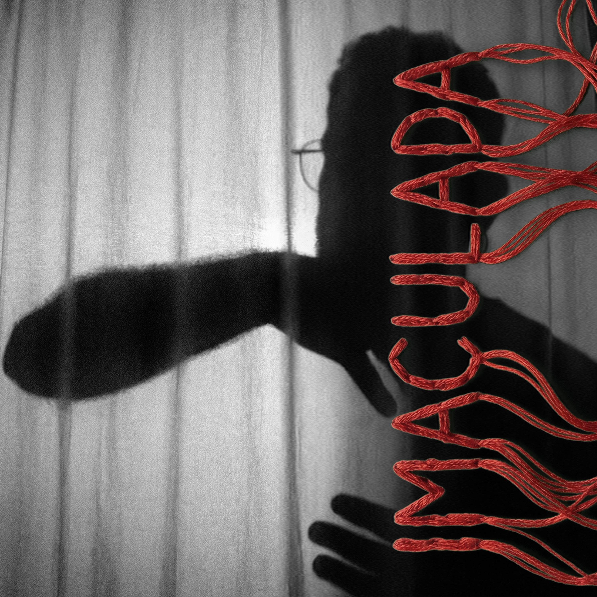
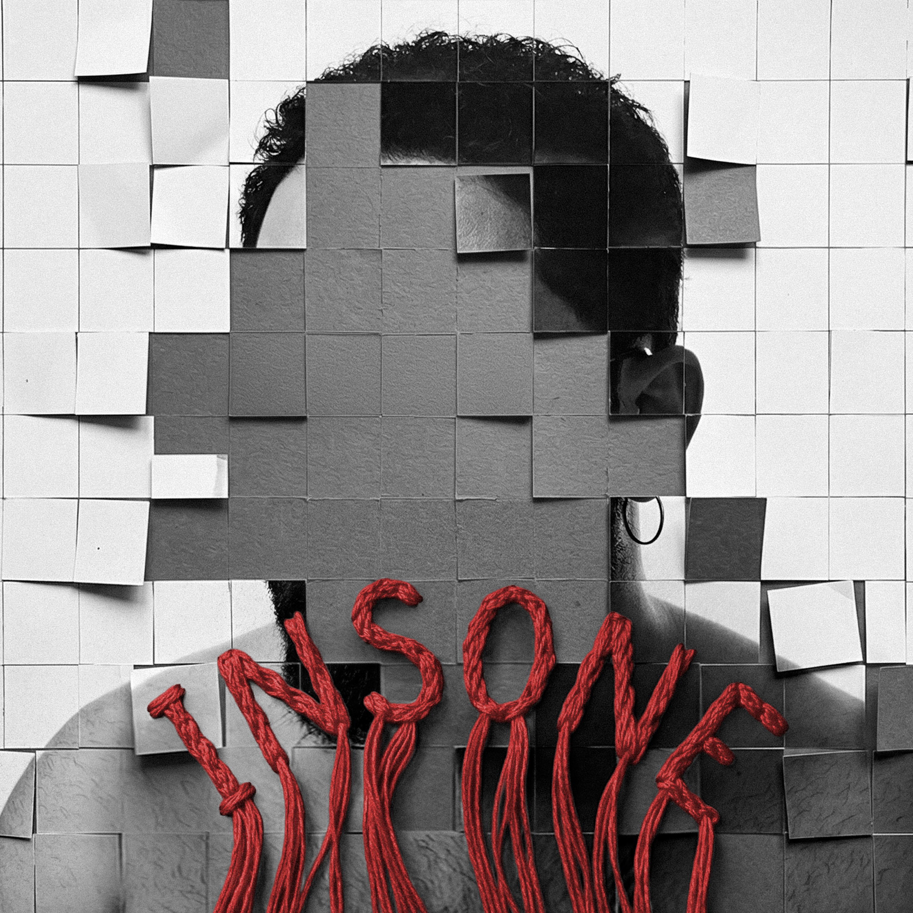
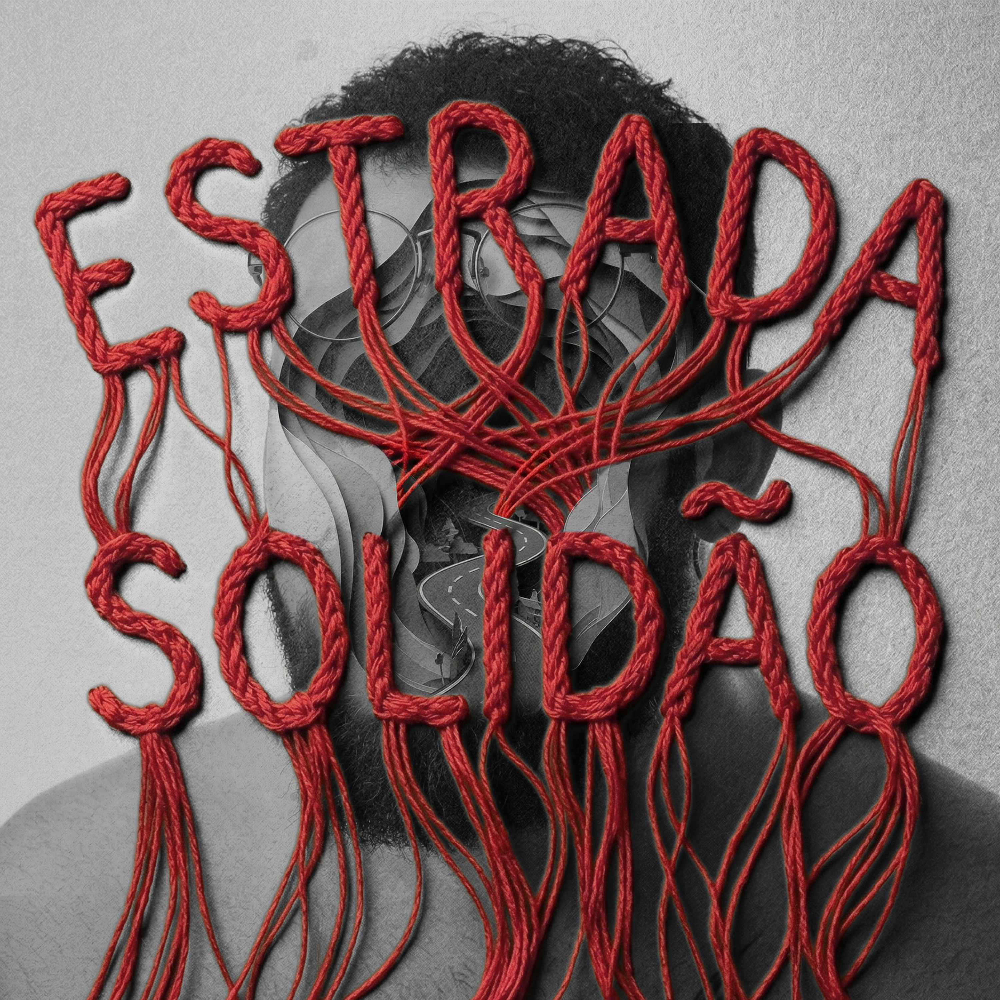
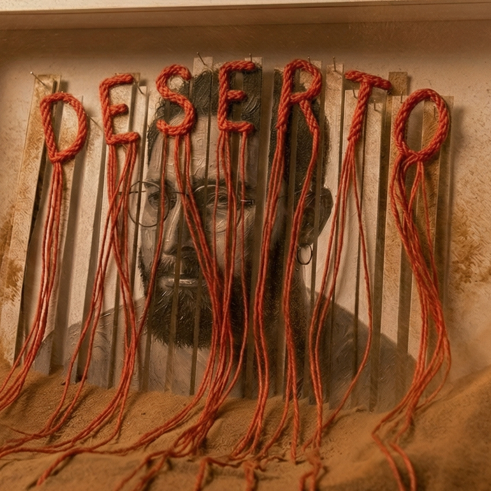

as cinco músicas
Do primeiro ao último dia do inverno.

Imaculada
Perdendo alguém
O último abraço.
em breve
Heróis Imaginários
Perdendo o chão
O grito de socorro.

Insone
Perdendo a paz
O corpo desobedece.

Estrada Solidão
Perdendo o caminho
O passo sem direção.

Deserto
Perdendo a ilusão
Solitude ou solidão.